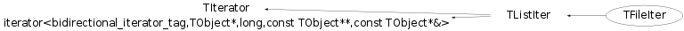

class TFileIter: public TListIter
Class to iterate (read / write ) the events written to TFile. The event is supposed to assign an unique ID in form of TKey <event Id> ::= eventName "." run_number "." event_number and stored as the TKey name of the object written void TesTFileIter(){ // This macros tests the various methods of TFileIter class. gSystem->Load("libTable"); //First create simple ROOT file TDataSet *ds = new TDataSet("event"); TObject *nextObject = 0; TRandom run; TRandom event; { TFileIter outSet("test.root","RECREATE"); UInt_t totalEvent = 10; UInt_t runNumber = 20010301; Int_t i=0; Int_t j=0; for (;j < 10;j++) { for (i = 1;i<totalEvent;i++) { outSet.NextEventPut(ds,UInt_t(i),UInt_t(runNumber+j+10*run.Rndm()-5)); } } } printf(" ----------------------> TFile has been created <--------------------\n"); TFile *f = new TFile("test.root"); TFileIter readObj(f); // the number of the object available directly from "MyDataSet.root" Int_t size = readObj.TotalKeys(); printf(" The total number of the objects: %d\n",size); //----------------------------------------------------------------------- // Loop over all objects, read them in to memory one by one printf(" -- > Loop over all objects, read them in to memory one by one < -- \n"); for( readObj = 0; int(readObj) < size; ++readObj){ nextObject = *readObj; printf(" %d bytes of the object \"%s\" of class \"%s\" written with TKey \"%s\" has been read from file\n" ,readObj.GetObjlen() ,nextObject->GetName() ,nextObject->IsA()->GetName() ,(const char *)readObj ); delete nextObject; } //----------------------------------------------------------------------- // Now loop over all objects in inverse order printf(" -- > Now loop over all objects in inverse order < -- \n"); for( readObj = size-1; (int)readObj >= 0; --readObj) { nextObject = *readObj; if (nextObject) { printf(" Object \"%s\" of class \"%s\" written with TKey \"%s\" has been read from file\n" ,nextObject->GetName() , nextObject->IsA()->GetName() ,(const char *)readObj ); delete nextObject; } else { printf("Error reading file by index\n"); } } //----------------------------------------------------------------------- // Loop over the objects starting from the object with the key name "event.02.01" printf(" -- > Loop over the objects starting from the object with the key name \"event.02.01\" < -- \n"); for( readObj = "event.02.01"; (const char *)readObj != 0; ++readObj){ nextObject = *readObj; printf(" Object \"%s\" of class \"%s\" written with Tkey \"%s\" has been read from file\n" , nextObject->GetName() , nextObject->IsA()->GetName() , (const char *)readObj ); delete nextObject; } printf(" -- > Loop over the objects starting from the 86-th object" < -- \n"); for( readObj = (const char *)(readObj = 86); (const char *)readObj != 0; ++readObj){ nextObject = *readObj; printf(" Object \"%s\" of class \"%s\" written with Tkey \"%s\" has been read from file\n" , nextObject->GetName() , nextObject->IsA()->GetName() , (const char *)readObj ); delete nextObject; } }
Function Members (Methods)
public:
| TFileIter(TFile* file = 0) | |
| TFileIter(TDirectory* directory) | |
| TFileIter(const TFileIter&) | |
| TFileIter(const char* name, Option_t* option = "", const char* ftitle = "", Int_t compress = 1, Int_t netopt = 0) | |
| virtual | ~TFileIter() |
| static TClass* | Class() |
| Int_t | CurrentCursorPosition() const |
| virtual const TCollection* | TListIter::GetCollection() const |
| TKey* | GetCurrentKey() const |
| static const char* | GetDefaultMapFileName() |
| virtual Int_t | GetDepth() const |
| static const char* | GetForeignFileSystemKey() |
| const char* | GetKeyName() const |
| static const char* | GetLocalFileNameKey() |
| virtual TObject* | GetObject() const |
| Int_t | GetObjlen() const |
| virtual Option_t* | TListIter::GetOption() const |
| static const char* | GetResourceName() |
| virtual const TDirectory* | GetTDirectory() const |
| virtual const TFile* | GetTFile() const |
| virtual TClass* | IsA() const |
| virtual Bool_t | IsOpen() const |
| static TString | MapName(const char* name, const char* localSystemKey = 0, const char* mountedFileSystemKey = 0) |
| virtual TObject* | Next() |
| virtual TObject* | Next(Int_t nSkip) |
| virtual TObject* | NextEventGet(UInt_t eventNumber = UInt_t(-1), UInt_t runNumber = UInt_t(-1), const char* name = "*") |
| virtual Int_t | NextEventPut(TObject* obj, UInt_t eventNum, UInt_t runNumber, const char* name = 0) |
| const char* | operator const char*() const |
| const TDirectory* | operator const TDirectory*() const |
| const TFile* | operator const TFile*() const |
| int | operator int() const |
| int | operator!=(const char* name) const |
| TObject* | operator()() |
| TObject* | operator()(Int_t nSkip) |
| virtual TObject* | operator*() const |
| TFileIter& | operator++() |
| TFileIter& | operator+=(Int_t shift) |
| TFileIter& | operator--() |
| TFileIter& | operator-=(Int_t shift) |
| TFileIter& | operator=(Int_t cursorPosition) |
| TFileIter& | operator=(const char* keyNameToFind) |
| int | operator==(const char* name) const |
| static void | PurgeKeys(TList* listOfKeys) |
| virtual void | Reset() |
| virtual void | Rewind() |
| void | SetCursorPosition(Int_t cursorPosition) |
| void | SetCursorPosition(const char* keyNameToFind) |
| void | TListIter::SetOption(Option_t* option) |
| virtual void | ShowMembers(TMemberInspector& insp) |
| virtual TKey* | SkipObjects(Int_t nSkip = 1) |
| virtual void | Streamer(TBuffer& b) |
| void | StreamerNVirtual(TBuffer& b) |
| virtual Int_t | TotalKeys() const |
protected:
| void | Initialize() |
| TKey* | NextEventKey(UInt_t eventNumber = UInt_t(-1), UInt_t runNumber = UInt_t(-1), const char* name = "*") |
| TObject* | ReadObj(const TKey* key) const |
private:
| virtual bool | operator!=(const TIterator& it) const |
| virtual TIterator& | operator=(const TIterator&) |
Data Members
protected:
| TObjLink* | TListIter::fCurCursor | current position in list |
| TObjLink* | TListIter::fCursor | next position in list |
| Int_t | fCursorPosition | the position of the current key in the sorted TKey list |
| Bool_t | TListIter::fDirection | iteration direction |
| TString | fEventName | current key name |
| UInt_t | fEventNumber | current "event number" |
| const TList* | TListIter::fList | list being iterated |
| Bool_t | fOwnTFile | Bit whether this classs creates TFile on its own to delete |
| TDirectory* | fRootFile | TDirectory/TFile to be iterated over |
| UInt_t | fRunNumber | current "run number" |
| Bool_t | TListIter::fStarted | iteration started |
private:
| TFileIter* | fNestedIterator | ! The inner TFidrectory interator; |
Class Charts
{kind=link}
{kind=link}
{kind=link}
{kind=link}

Function documentation
TFileIter(const char* name, Option_t* option = "", const char* ftitle = "", Int_t compress = 1, Int_t netopt = 0)
TFileIter(const TFileIter& )
Copy ctor can be used with the "read only" files only. the next statement is illegal, spotted by coverity "Dereferencing pointer "this->fRootFile". (Deref happens because this is a virtual function call.) assert(!fRootFile->IsWritable());
Int_t GetDepth() const
return the current number of the nested subdirectroies;
= 0 - means there is no subdirectories
Int_t TotalKeys() const
The total number of the TKey keys in the current TDirectory only Usually this means the total number of different objects those can be read one by one. It does NOT count the nested sub-TDirectory. It is too costly and it can be abused.
void PurgeKeys(TList* listOfKeys)
Remove the TKey duplication, leave the keys with highest cycle number only Sort if first
TKey * SkipObjects(Int_t nSkip = 1)
Returns the TKey pointer to the nSkip TKey object from the current one nSkip = 0; the state of the iterator is not changed nSkip > 0; iterator skips nSkip objects in the container. the direction of the iteration is sign(nSkip)*kIterForward Returns: TKey that can be used to fetch the object from the TDirectory
TKey * NextEventKey(UInt_t eventNumber = UInt_t(-1), UInt_t runNumber = UInt_t(-1), const char* name = "*")
TObject * NextEventGet(UInt_t eventNumber = UInt_t(-1), UInt_t runNumber = UInt_t(-1), const char* name = "*")
TObject * ReadObj(const TKey* key) const
Read the next TObject from for the TDirectory by TKey provided
Int_t NextEventPut(TObject* obj, UInt_t eventNum, UInt_t runNumber, const char* name = 0)
Create a special TKey name with obj provided and write it out.
TString MapName(const char* name, const char* localSystemKey = 0, const char* mountedFileSystemKey = 0)
MapName(const char *name, const char *localSystemKey,const char *mountedFileSystemKey) Substitute the logical name with the real one if any 1. add a line into system.rootrc or ~/.rootrc or ./.rootrc TFileIter.ForeignFileMap mapFile // the name of the file to map the local name to the global file service If this line is omitted then TFileIter class seeks for the default mapping file in the current directory "io.config"
const TDirectory * GetTDirectory() const
{ return fNestedIterator ? fNestedIterator->GetTDirectory() : fRootFile; }